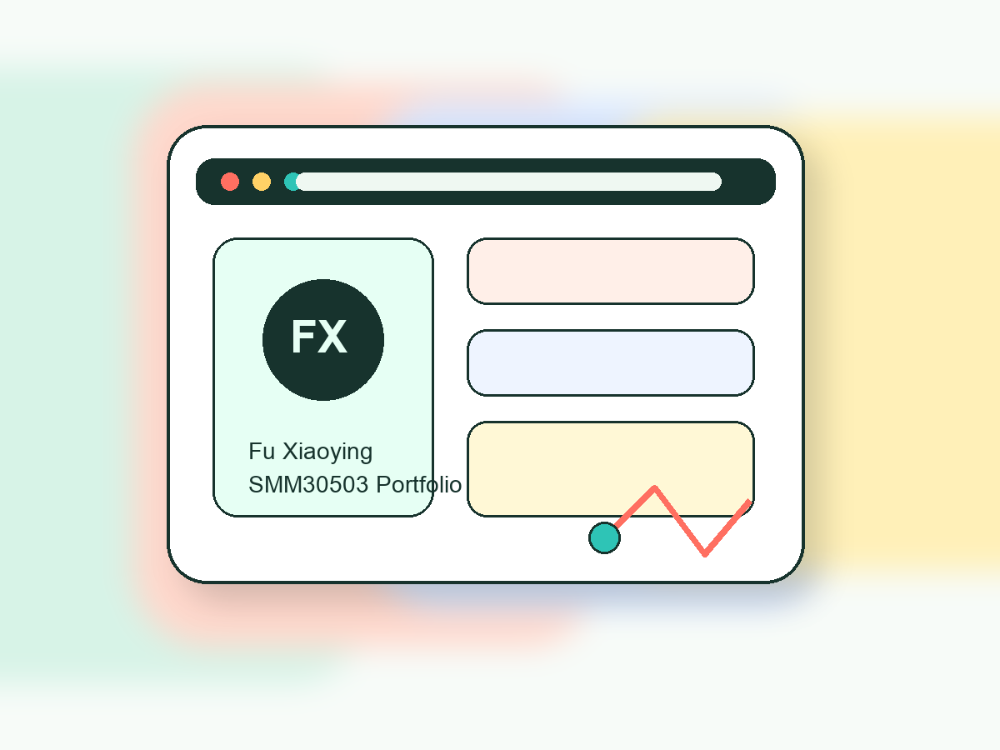

Academic Identity
I am Fu Xiaoying, a student from the Cyberjaya group taking SMM30503 Web Design and Development. This website presents my learning journey in a structured and visually organized way.
SMM30503 Web Design and Development
This portfolio introduces Fu Xiaoying through academic background, interests, technical skills, and selected learning activities for Individual Assignment 1.

Profile
I am Fu Xiaoying, a student from the Cyberjaya group taking SMM30503 Web Design and Development. This website presents my learning journey in a structured and visually organized way.
My website uses a bright study-desk concept with clean sections, strong contrast, and simple navigation so visitors can understand the content quickly.
I focus on building web pages that balance useful information, readable typography, responsive layout, and consistent visual details.
Study Path
Individual Assignment 1: Personal Website using HTML and CSS.
Coursework practice in page structure, styling, usability, and website presentation.
Prepared for the Cyberjaya group under the Faculty of Business and Communication.
Capabilities
Building semantic sections, headings, navigation, and readable page content.
Creating colors, spacing, responsive grids, cards, buttons, and visual hierarchy.
Organizing personal information so the website feels complete and easy to scan.
Adapting the page for desktop and mobile screens with clear navigation.
Course Work
A multi-section HTML and CSS website presenting identity, education, skills, gallery items, and contact information.
HTML + CSSA color-block interface inspired by a study dashboard, designed to make the website look different from a standard template.
Layout DesignScreenshot and cover pages prepared for assignment submission using the required student and course information.
DocumentationMoments
Reach Me
Thank you for viewing this SMM30503 personal website. This page was prepared as an academic portfolio for Individual Assignment 1.